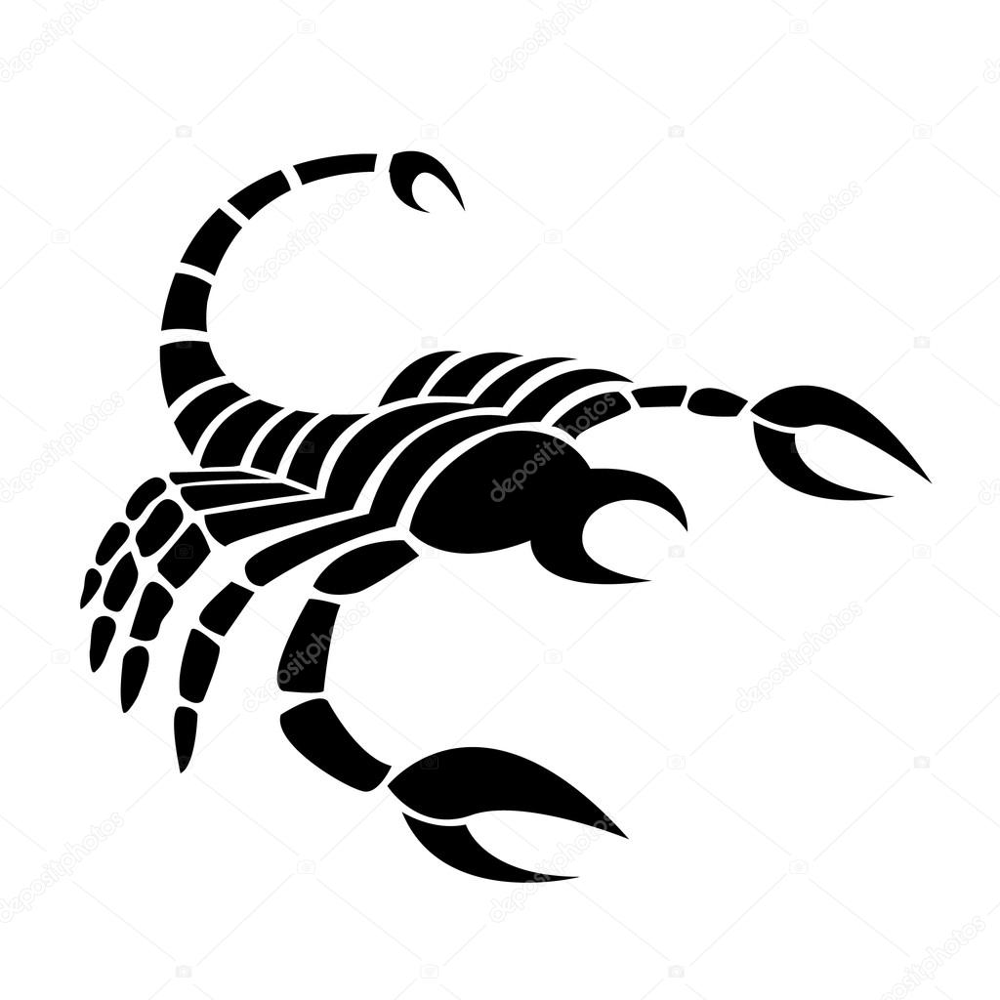

First post
| Signe | Positive | Negative | Planete Maitre | Mode | Element |

Belier :21 mars-19 avril |
Franc |
Impulsive/trop instinctif |
Mars |
Cardinal |
Feu |

Gemeaux :21 mai-20 juin |
stable |
Tetu/Borne |
Venus |
Fixe |
Terre |

Gemeaux :21 mai-20 juin |
Adaptable |
Superficiel(le) |
Mercure |
Mutable |
Air |

Cancer :21 juin-22 juillet |
Protecteur/Devouement |
Jaloux/Capricieux |
Lune |
Cardinal |
Eau |

Lion :23 juillet-22 aout |
integre |
Autoritaire/Orgueil |
Soleil |
Fixe |
Feu |

Vierge :23 aout-22 septembre |
Discipline/Logique/Rigoureux |
Manque de souplesse/Rancunier |
Mercure |
Mutable |
Terre |

Balance :23 septembre-22 octobre |
Diplomatique |
Indecise/Hesitante |
Venus |
Cardinal |
Air |
| 
Scorpion :23 octobre-21 novembre |
Profond/Genereux |
Impitoyable/egoiste |
Juipter |
Mutable |
Feu |

Sagittaire :22 novembre-21 decembre |
Judicieux/imaginatif |
Trop moraliste/Inconstant |
juipter |
Mutable |
Feu |
Capricorne :22 decembre-19 janvier |
De principe/Patient |
Saturne |
Cardinal |
Terre |
|

Verseau :20 janvier-18 fevrier |
Liberal/sens de l'amitie |
Excentrique,impatient |
Uranus |
Fixe |
Air |

Poisson :19 fevrier-20 mars |
Charitable/Compatissant |
Anxieux/Irresponsable |
Neptune |
Mutable |
Eau |